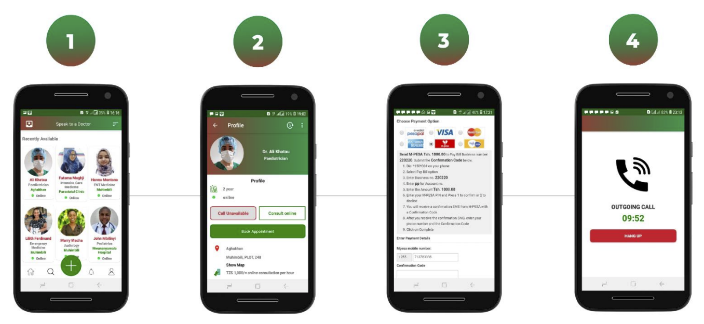

The East African Cross-Border Telemedicine Platform Project
With support and collaboration with the EAC-GIZ Incubator for Integration and Development in East Africa (IIDEA) and the African Development Bank Group through its Youth Entrepreneurship and Innovation Multi-Donor Trust Fund, LyfPlus Limited launched the “EAC Cross-Border Telemedicine Platform”, with the aim to improve healthcare accessibility along the East African transport corridors for vulnerable population groups including pregnant women and children, cross-border truck drivers, traders, and border residents along East African borders for safer integration and cross-border trading.
A Glance at the problem
- 1. Cross border truck drivers are occupationally a susceptible group, identified by UNAIDS as a key population having special medical needs. By the virtue of their continuous traveling, experience difficulty in accessing healthcare while they bear a disproportionate health burden.
- 2. Limited health services along EAC transport corridors causes poor access to healthcare to vulnerable populations including women and children and other border populations. Lack to adequate health services means poor management of chronic conditions and poor care and treatment of infectious diseases like HIV and Tuberculosis.
- 3. Delayed intervention and treatment of infectious diseases to these population groups increases the risk of disease transmission, as the untreated patient can engage with the rest of the community unknowingly, and wide- spreading in this case means cross-border transmission. Increase in disease exposure to cross- border truck drivers and traders increasesthe risk of cross-border transmission and consequently affects integration and cross-border trading.
Children Mortality Rate
Chronic Diseases Prevalence Rate
Maternal Mortality Rate
In 2017 village areas along Uganda, Rwanda, Kenya and Tanzania border points including Malaba, Busia, Mtukula, Katuna and Sirare had higher prevalence of diseases and epidemics than the general populations in the respective countries. Tuberculosis prevalence was 4% higher and HIV was 7% higher prevalent in these villages. Among cross-border truck drivers travelling along Mombasa to Kampala and Kampala to Juba route, HIV prevalence was 18% higher than the national prevalence of Kenya, Uganda and South Sudan respectively. These statistical data portray the close interrelated relationship between cross-border truck drivers and EAC crossborder intra-regional disease/epidemic transmission.
Proposed Solution:
To implement an online platform that facilitates medical services to crossborder truck drivers, traders and border resident communities in improving healthcare accessibility along East African borders, for safer integration and cross-border trading

- 1.
- The online platform will integrate virtual physician consultation, diagnosis, e-prescription and electronic medical records with various healthcare providers across East Africa to allow users to access important medical services instantly and conveniently in one platform.
- 2.
- The platform should also feature a voice call solution and a USSD application for inclusivity, allowing target beneficiaries with no internet to access physician consultation, book hospital appointments and receive prescription of drugs remotely.
- 3.
- The project will also onboard various specialty of physicians and partner with several healthcare providers (hospitals and clinics) across the East African region, to offer comprehensive medical services for the communities including surgery, vaccination, child delivery, etc., with special focus to vulnerable population groups (women, children, chronic disease patients, etc.).
Project Objectives and Scope (1st Phase):
Project Goal:
A fully integrated online platform that facilitates continuity of obstetric care to pregnant women living in Elegu, Busia and Akanyaru border points, and mental health consultation to cross-border truck rivers and traders implemented, for safer integration and cross border trading.
Project Objectives:
- 1)
- To Integrate video calling, multimedia messaging and appointment booking to LyfPlus application (the online platform), for facilitating mental health consultation to crossborder truck drivers and traders and continuity of obstetric care to pregnant women at Elegu, Busia and Akanyaru border points.
- 2)
- To onboard 100 doctors in different specialties from Burundi, South Sudan and Uganda to the online platform for providing mental health consultation to truckers and traders and obstetric care to pregnant women at the selected border points.
- 3)
- To enrol pregnant women with specialmedical needslike hypertension and diabetesfrom Elegu, Busia and Akanyaru, to an obstetric continuity care program, 15 every month for 6 months, where they will access free obstetrician consultation and treatment through the online platform
- 4)
- To conduct a health camp primarily for mental health at Elegu border and register 50 cross-border truck drivers and 50 cross border traders on the platform for providing continuous mental health consultation and counselling.
Project Implementation & Milestones:
Mr. William Mduma during an information seminar with doctors in Dar es Salaam, presented available opportunities over cross-border telemedicine services, and their benefits both for healthcare providers and patients (Wednesday 3rd November 2021).
Currently the LyfPlus team is rolling-out the first version of the integrated platform for testing (in android operating system and web) and has onboarded a few doctors for the same. The project will also onboard a select group of patients necessary for product validation in assessment of the platform towards reaching product market-fit (PMF).
The Telemedicine Platform (Web & Mobile)
How they work (steps):
Next Steps:
- 1)
- To onboard 100 doctors in different specialties from Burundi, South Sudan and Uganda to the online platform for providing mental health consultation to truckers and traders and obstetric care to pregnant women at the selected border points.
- 2)
- To enrol pregnant women with specialmedical needslike hypertension and diabetesfrom Elegu, Busia and Akanyaru, to an obstetric continuity care program, 15 every month for 6 months, where they will access free obstetrician consultation and treatment through the online platform.
- 3)
- To conduct a health camp primarily for mental health at Elegu border and register 50 cross-border truck drivers and 50 cross border traders on the platform for providing continuous mental health consultation and counselling.